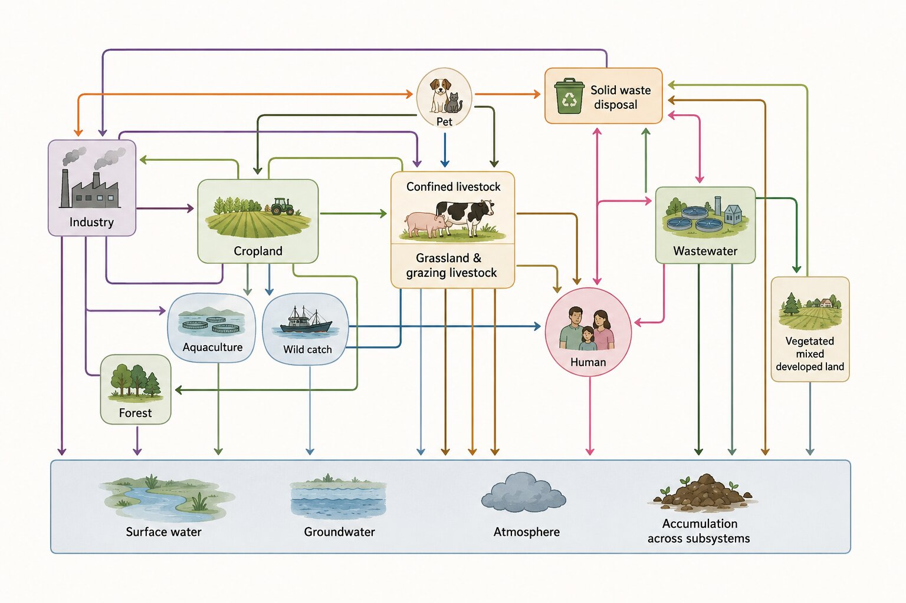
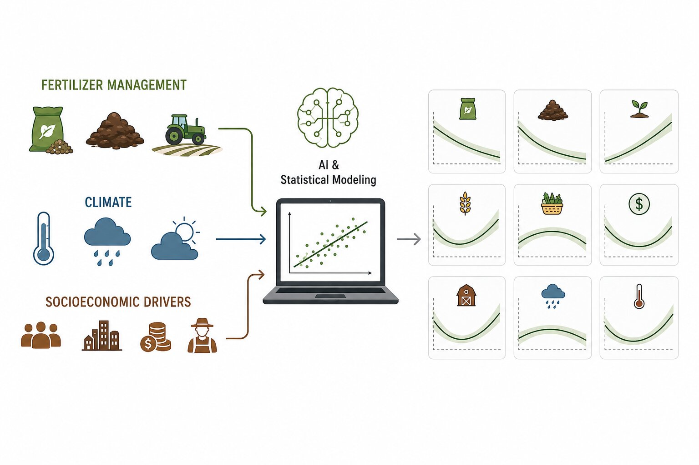
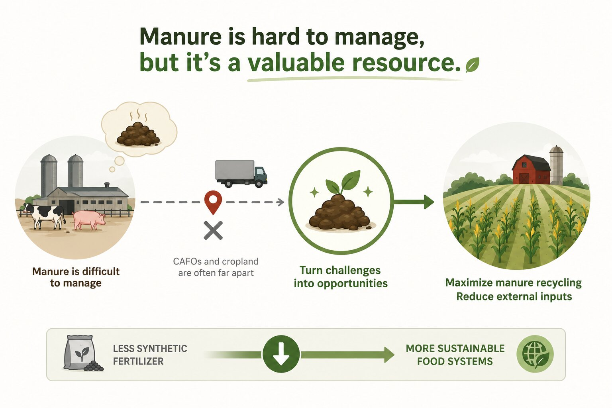
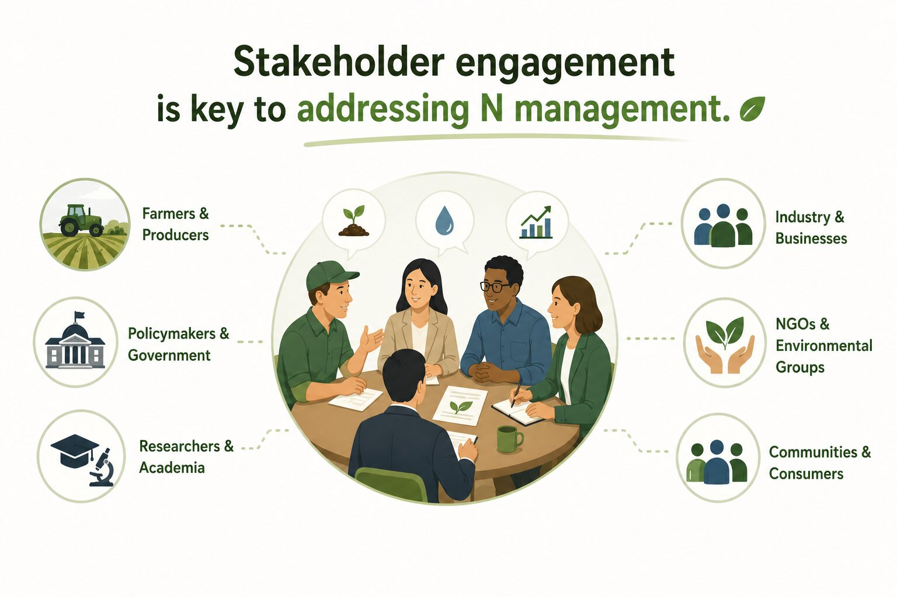

Research
My research combines systems analysis, data-driven modeling, nutrient circularity, and stakeholder engagement to advance sustainable agriculture and food systems. Through these complementary approaches, I develop science-based solutions for improving nitrogen management, enhancing nutrient use efficiency, and reducing environmental impacts across agricultural systems and beyond.

N Budget
Quantifying nitrogen inputs, outputs, losses, and accumulation for interconnected systems.
Learn more →
Statistical modeling
Identifying environmental, climatic, and socioeconomic drivers of nutrient manageement outcomes.
Learn more →

Stakeholder Engagement
Connecting science, policy, and practice through collaborative nitrogen governance and international collaboration.
Learn more →
Nitrogen budget for the contiguous United States in 2022.
Yanyu Wang, Eric A. Davidson, Baojing Gu, William C. Dennison,
Luis Lassaletta, and Xin Zhang.
Proceedings of the National Academy of Sciences (PNAS), in review.
Nitrogen Budget
Nitrogen is indispensable for sustaining modern society. As a fundamental nutrient for plant growth, reactive nitrogen supports nearly half of global food production through the use of synthetic fertilizers and biological nitrogen fixation. Although nitrogen is essential for feeding a growing population, its use is remarkably inefficient. More than half of the nitrogen applied to agricultural systems is never incorporated into harvested food but is instead lost to the atmosphere or water through ammonia volatilization, greenhouse gas emissions, nitrate leaching, and runoff. These losses contribute to climate change, degraded air quality, eutrophication of rivers and coastal waters, biodiversity loss, and adverse human health impacts.
Historically, research on nitrogen management has focused primarily on crop and livestock production, where fertilizer application and manure management have long been recognized as major sources of nitrogen loss. While these studies have greatly improved our understanding of agricultural nitrogen use efficiency, they capture only part of the nitrogen cycle. Modern food systems are highly interconnected, linking agricultural production with industrial manufacturing, international trade, food consumption, wastewater treatment, solid waste management, and the natural environment. Decisions made within one sector often propagate throughout the entire system, creating feedbacks that cannot be understood by studying individual components in isolation.
My research adopts a systems perspective by quantifying nitrogen flows across the entire coupled human and natural system. Using the Coupled Human and Natural Systems (CHANS) framework, I developed a comprehensive nitrogen budget for the contiguous United States that tracks nitrogen movement across thirteen interconnected subsystems, including cropland, livestock, forests, industry, human consumption, wastewater, solid waste, and the environment. This systems-based approach reveals where nitrogen enters the food system, how it is transformed, where it accumulates, and where it is ultimately lost to the environment.

Statistical Analysis
How efficiently nitrogen is managed in agricultural systems depends on a combination of climate, soil, management practices, socioeconomic conditions, and policy. These factors vary across regions and interact in nonlinear ways, making it difficult to identify effective nutrient management strategies. Advances in spatial statistics, machine learning, and geospatial analysis provide powerful tools for understanding these relationships and supporting evidence-based decision-making.
My research integrates spatial statistics, machine learning, and geospatial analysis to uncover the drivers of agricultural sustainability across scales. One example of my current work is to compare county-level crop nitrogen use efficiency (NUE) across the United States and China. By integrating nitrogen budgets with climate, management, crop composition, and socioeconomic variables, I applied a suite of regression, generalized additive (GAM), spatial conditional autoregressive (CAR), and random forest models to identify and compare the drivers of crop NUE in both countries. This work identified nitrogen input intensity as one of the primary drivers of crop NUE and showed that synthetic fertilizer and manure have optimal application ranges, beyond which additional inputs reduce NUE.
I also plan to investigate the environmental, economic, and socioeconomic drivers that have shaped the current spatial concentration of concentrated animal feeding operations (CAFOs) across the United States. By integrating these insights with spatial optimization and decision-support frameworks, I aim to identify opportunities for better aligning livestock production with surrounding croplands, improving manure redistribution, reducing nutrient losses and greenhouse gas emissions, and enhancing nutrient circularity while maintaining agricultural productivity.

Nutrient Recycling
Modern agriculture has become increasingly specialized, separating crop and livestock production across landscapes. This spatial decoupling disrupts natural nutrient cycles: feed is transported long distances to livestock operations, but excess manure is often too costly to transport back to croplands where nutrients are needed. As a result, nutrients accumulate in livestock-intensive regions, contributing to air and water pollution, while crop-producing regions remain dependent on synthetic fertilizers. Recovering and recycling nutrients from livestock manure and other organic waste streams provides an opportunity to close these nutrient loops, reduce reliance on fossil-fuel-intensive fertilizer production, and advance a more circular agricultural system.
My research develops systems-based approaches to quantify nutrient recycling potential and identify practical pathways toward greater nutrient circularity. I developed a transparent framework for evaluating manure nitrogen recycling potential, providing a consistent basis for assessing how recoverable manure nutrients align with crop nutrient demand under both current and future conditions. Building on this work, I am interested in understanding how the spatial organization of agricultural systems influences nutrient circularity. By integrating nitrogen flow analysis, geospatial modeling, and scenario analysis, my research explores how reconnecting crop and livestock production can improve manure redistribution, reduce nutrient losses and greenhouse gas emissions, and enhance nutrient recycling while remaining environmentally, economically, and socially feasible.
Looking ahead, at Georgetown I am expanding this work from quantifying nutrient recycling potential to designing circular agricultural systems. My research will integrate high-resolution spatial modeling, climate assessment, and stakeholder-informed scenario analysis to identify where nutrient recycling can deliver the greatest environmental, climate, and agricultural benefits. I am particularly interested in developing spatial planning frameworks that optimize manure redistribution, evaluate opportunities for recoupling crop and livestock production, and quantify trade-offs among nutrient pollution, greenhouse gas emissions, agricultural productivity, and economic feasibility. Ultimately, I hope to develop science-based strategies that transform nutrient recycling from a waste management challenge into a cornerstone of a circular nutrient economy, supporting more sustainable and resilient food systems.

Stakeholder Engagement
Sustainable nitrogen management is a global challenge that requires collaboration across disciplines, sectors, and national boundaries. While farmers play a central role in improving nitrogen use, many other stakeholders—including policymakers, industry, supply chain actors, researchers, and consumers—influence how nitrogen moves through food systems and how management decisions are implemented. Moreover, because food, feed, and fertilizer trade redistribute nitrogen across regions and reactive nitrogen can travel across political boundaries through air and water, effective nitrogen management requires both local action and international cooperation.
My research integrates stakeholder engagement with international collaboration to bridge scientific knowledge and real-world decision-making. By bringing together diverse stakeholders, I seek to co-develop science-based strategies that improve nutrient management while accounting for local priorities, governance systems, and socioeconomic contexts. This collaborative approach helps ensure that research not only advances scientific understanding but also informs practical solutions that are relevant, feasible, and broadly applicable.
As part of the NSF–NSFC collaborative project, "INFEWS: U.S.–China: Managing Agricultural Nitrogen to Achieve a Sustainable Food–Energy–Water Nexus in China and the U.S.", I helped organize and facilitate the first parallel U.S.–China stakeholder workshops on sustainable nitrogen management. These workshops brought together researchers, government agencies, industry representatives, NGOs, and other stakeholders to examine the connections between nitrogen management and food, energy, and water (FEW) sustainability. Through these discussions, we identified both shared priorities and country-specific challenges, implementation barriers, and opportunities for mutual learning. Despite substantial differences in governance systems and agricultural contexts, stakeholders from both countries recognized many common pathways for improving nitrogen management, demonstrating the value of stakeholder-led collaboration in advancing sustainable FEW systems.
Looking ahead, I hope to continue building international research networks that connect science, policy, and practice across countries. By integrating stakeholder engagement throughout the research process—from identifying research priorities to evaluating management strategies and communicating scientific findings—I aim to co-develop solutions that are scientifically rigorous, locally relevant, and globally transferable. I believe that co-developing solutions through stakeholder partnerships and international collaboration is essential for advancing sustainable nitrogen management and building more sustainable FEW systems.